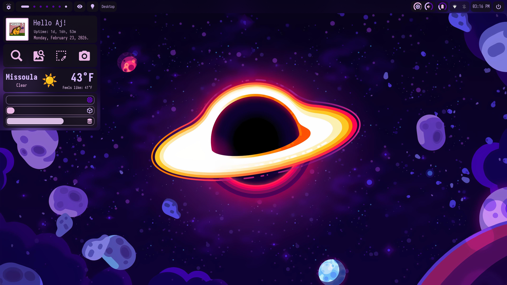
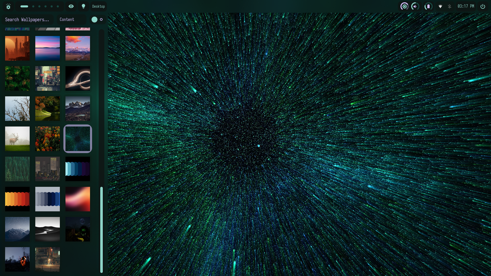
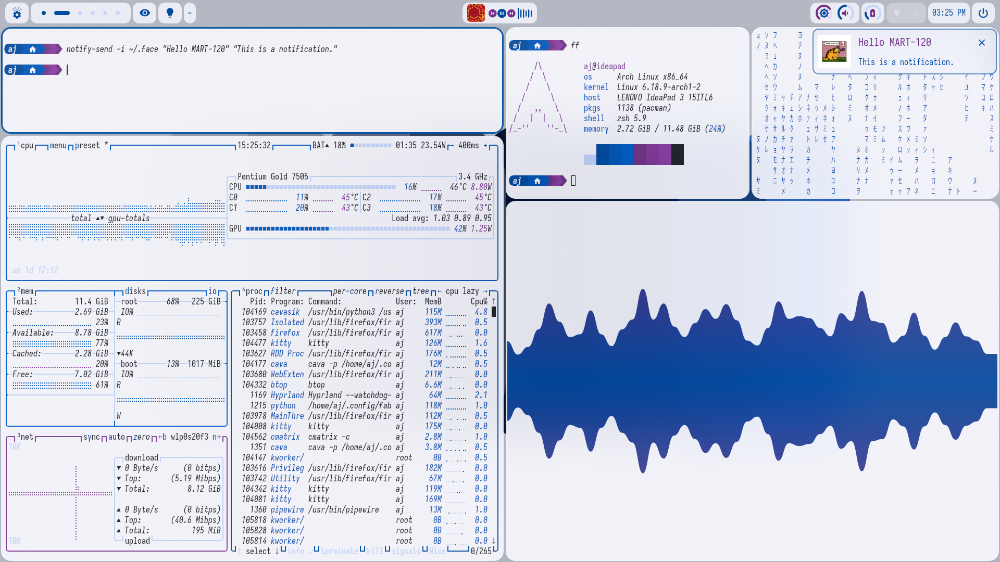

Throughout my time in college, I've spent a lot of time
familiarizing myself with a few different linux distributions.
This led me to discovering the art of customization in linux
desktop environments and window managers. During my time spent
playing around with different environments, I got really into
customizing Hyprland, which is a tiling window manager that
comes out of the box pretty minimal, you slowly build your
own config to your liking. It has helped a lot with my workflow
for college. Hyprland doesn't come with any widgets or DE tools
so I learned how to come up with my own using Fabric, which is a framework
for making desktop widgets using python. Over time I've created a setup that
is unique to my own needs and styles. Here are some pics of my setup!


